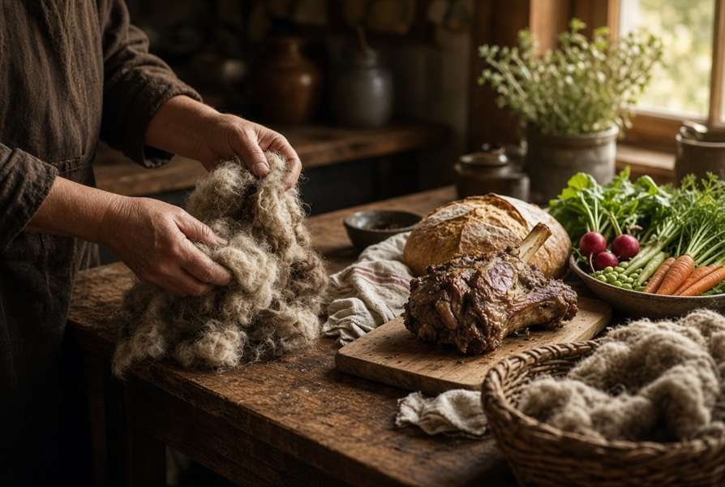
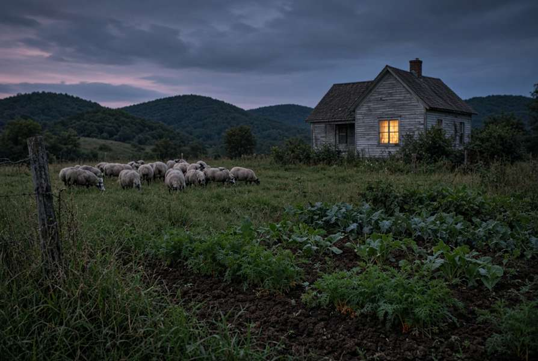
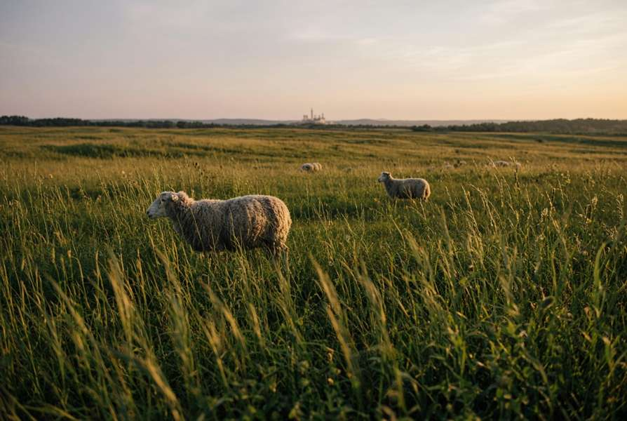

Bed. Mouth. Trial.
No nonprofit. List the house. File Farm to Stay when it opens in November, up to $10,000. File Buy Local by November 4, $5,000–$50,000, half match. File a SARE trial by December 3, up to $15,000.

Sustenance louder than shipping. A lamb is a meal and a reason the pasture is not a pad. Open this file in Chrome or Safari. Do not paste it into the email body.

No nonprofit. List the house. File Farm to Stay when it opens in November, up to $10,000. File Buy Local by November 4, $5,000–$50,000, half match. File a SARE trial by December 3, up to $15,000.

A friend with a nonprofit can file Joint Effort Marketing by November 1. That buys the pull, not the fence. The big training grant is shut until 2027. An easement talk runs beside the grants. A grant does not buy the deed.
Buy Local workshop, Food Enterprise Center, 12:30–2:30.
Farm to Stay, free, before the form opens.
Noon Central. How to write the trial.
Joint Effort Marketing. Promotion. Not the fence.
11:59 p.m. Central. Two letters. Two years of books. A W-9. Do not invent the sales numbers.
File the week it opens. Up to $10,000.
Noon Central. One farm, $15,000. Two separate farms, $30,000.
[Farm name] in [county], Wisconsin, raises lamb and a kitchen garden and sells to people who can drive to the place. The hurdle is not production. It is the last step between a fleece, a cut, or a crate of food and a Wisconsin buyer. This project builds that step: a farm table and a short local-food route so lamb, wool, and garden food are sold here, not shipped out of the county as a commodity. The work runs January 2027 through December 2027. A regular on-farm sale, one restaurant or shop or school kitchen, and two open days. Success is dollars of Wisconsin food sold to Wisconsin buyers above the 2025–2026 baseline, and buyers who come back. Ask $18,000. Match $18,000, mostly her time. They will pay labor, labels, a cooler under $10,000, mileage at $0.51, signs, and a page a buyer can find. They will not pay animals, a kitchen, raw product, meals, hotels, or a vehicle. Two letters only.
[Farm name] is a working Wisconsin place: a flock, a garden, and a house that can take a guest. The stay is not a vacation from the farm. A guest sleeps where the work is, eats from the ground, and can put hands on a fleece or a chore. The money finishes the room and sets one repeatable experience: a farm table, or a wool afternoon. Not a renovation. Not land.
Title: Two finishes on one pasture — what the lamb, the fleece, and the eater actually do. Split a group of lambs of similar age onto two finishing approaches she can actually run. Weigh at start and finish. Record days, fleece weight on a sample, and a taste note from people who eat both. No meter from out of state. One free field afternoon and a two-page note other flocks can use. Livestock and permanent fence only half-funded. Day-to-day feed is not allowed.
Verified: Buy Local is open through November 4. Farm to Stay opens in November. SARE is due December 3. There is no Wisconsin nutrient-density institute. That lab is in Massachusetts.